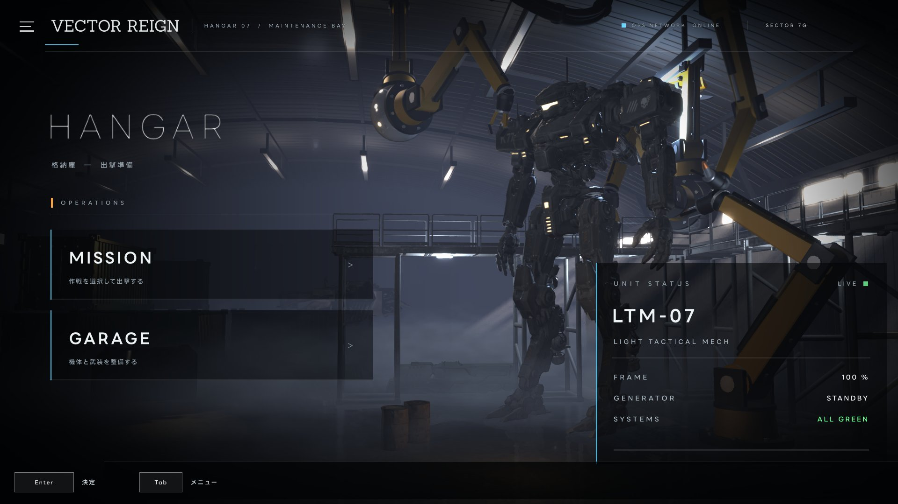
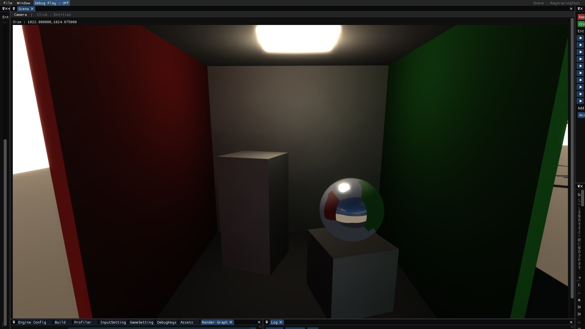
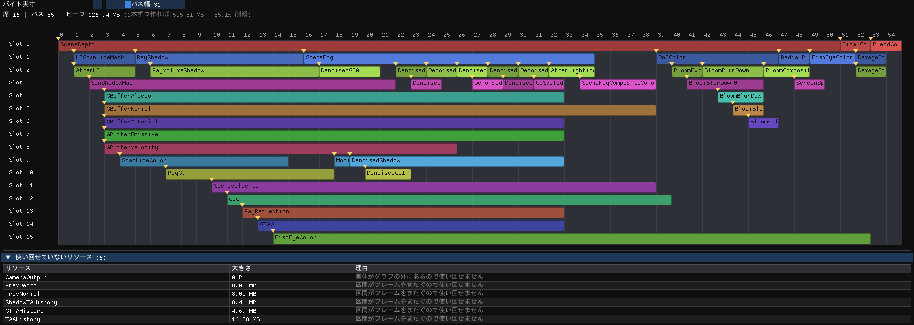

自作エンジン / 技術詳細
DirectX 12 の描画
CPU と GPU を3フレームずらして並行させ、リソースの解放はフェンスで遅らせています。描画の流れはレンダーグラフで持ち、バリアとメモリの共有を自動化しました。
01
概要
描画の全体像
DirectX 12 は、ドライバーがしていたメモリ・同期・状態遷移の管理をアプリ側に任せる代わりに、CPU の負荷を減らして細かく制御できる API です。教科書で学んだデバイス・キュー・フェンス・バリア・PSO を土台に、自分のエンジンとして組み直しました。
| シーン | パイプラインの方針 |
|---|---|
| 格納庫(ホーム) | レイトレーシングの GI・反射、ボリュメトリックフォグ。見た目を重視 |
| 戦闘 | シャドウマップが中心で、GI と反射は外す。速さを重視 |
02
実際の画面
エンジンで描画した画面



03
基盤
CPU と GPU の同期
3フレームずらして並行させる
- フレームごとに Command Allocator とフェンス値を持ち、同じ番号のフレームが前回 GPU で終わったのをフェンスで確かめてから使い回します。
- バックバッファも3枚です。CPU が GPU の完了を毎回待たずに済みます。
リソースの解放を遅らせる
- CPU が要らなくなった時点で、GPU はまだそのリソースを使っているかもしれません。
- 解放はフレーム番号ごとのキューに積み、3フレーム後にフェンスで完了を確かめてから実行します。
- ディスクリプタの席も、使ったフレームのフェンス値と一緒に預け、GPU が通過してから空きへ戻します。
バインドレスと PSO
- シェーダーモデル 6.6 の
ResourceDescriptorHeap[番号]で、シェーダーがヒープを番号で直接引きます。マテリアルはテクスチャの番号を持つだけです。 - ルートシグネチャは HLSL 側に定義し、PSO は中身のハッシュで共有してハンドルで持ちます。
- 毎フレーム変わる定数は、大きな Upload バッファから 256 バイト単位で切り出して渡します。
| キュー | 用途 |
|---|---|
| Direct | 毎フレームの描画 |
| Copy | 非同期ロードのアップロード |
| Compute | 非同期ロード中のメッシュレット関連、BLAS の構築など |
04
レンダーグラフ
描画の流れをデータで持つ

- つないだ線からトポロジカルソートで実行順を決めます。循環したら、壊れた絵を出さないようにコンパイルを失敗させます。
- 各パスの入出力の使い方から、状態遷移のバリアを自動で積みます。
- 生存区間が重ならない中間テクスチャは、1つのヒープの同じ場所に Placed Resource で置いて共有します(メモリエイリアシング)。
- TAA のように前フレームを読む入力は実行順の辺にせず、循環を避けます。
- コンパイルは GPU に触らずに最後まで通り、構成が変わったときだけ行います。

パスを C++ に直接書くと、1つ足すたびにバリアの位置や中間テクスチャの確保を手で直すことになり、すぐ壊れます。中間テクスチャを全部別々に確保すると VRAM も足りません。これを解決するために作りました。
05
GPU の機能
現行世代の機能を使う
メッシュシェーダーと GPU での LOD 選択
- 読み込み時に DirectXMesh でメッシュレットに分け、増幅シェーダーで視錐台カリングと法線コーンカリングを行います。
- LOD は画面に占める割合から増幅シェーダーで選びます。影はカスケードごとに違う段を選べます。
レイトレーシング(ラスタライズとのハイブリッド)
| 用途 | 方式 | 理由 |
|---|---|---|
| GI(間接光) | DispatchRays | 当たった面のマテリアルを読む。低解像度で計算してから拡大 |
| 影 | DispatchRays | 時間・空間のデノイズ付き |
| 反射 | RayQuery | 粗さに応じて周りの間接光へ置き換え |
| ボリューム影、ボス撃破の光の筋 | RayQuery | 当たったかどうかだけ分かればよいので軽いインラインで |
- スキニング後の頂点で BLAS を作り直さずに更新し、静的な BLAS は数フレームに分けて圧縮します。
- ボイド 4,000 体は、光の筋が出ている間だけレイトレーシングの対象に登録します。
GPU パーティクルと画面効果
- 発生・更新・描画リストの作成をコンピュートシェーダーで行い、
ExecuteIndirectで描きます。粒の数を CPU へ読み戻しません。 - 全プールの粒を1本の一覧に集め、バイトニックソートで遠い順に並べます。種類をまたいだ前後の崩れとちらつきを防ぎます。
- PBR のディファード、カスケードシャドウ、GTAO、ボリュメトリックフォグ、TAA、ブルーム、ACES のトーンマップを実装しました。
06
VRAM の削減
測ってから減らす
- 用途別の集計 : リソースを作るときに用途の札を付け、消えたら自動で引きます。エディターで大きい所から削りました。
- 可変長のメガバッファ : 予約リソースで仮想アドレスだけ大きく取り、必要な分だけ 4 MB 単位で物理メモリを付けます。空きが続いたらフェンスで確かめて外します。
- 頂点形式の分割 : 静的な頂点は 32 バイト(法線・接線を八面体エンコード)、ボーンの割り当ては 16 バイトの別バッファ、スキニング後は 20 バイトにしました。
- メモリエイリアシング : レンダーグラフで中間テクスチャのメモリを共有します。
07
成果と計測
数字で見る
| 項目 | 値 |
|---|---|
| テストシーンの GPU メモリ | 3,858 MiB → 1,697 MiB |
| 格納庫の中間テクスチャのメモリ(エイリアシング) | 505.81 MB → 226.94 MB(55.1% 削減) |
| 描画パスの種類 | 43 種(テスト用を含む) |
| CPU と GPU のずらし | 3フレーム(バックバッファ 3 枚) |
動作確認環境 : Intel Core i7-14650HX(論理24スレッド)/ NVIDIA GeForce RTX 5060 Laptop GPU / メモリ 16 GB
今後の改善点
- 描画のコマンド記録は主にメインスレッドです。スレッドごとにコマンドリストを持てば並列に記録できます。
- レンダーグラフは Direct キュー1本で実行しています。依存のないコンピュートパスを別キューで並行させる余地があります。
- 出力がどこにも使われないパスを自動で省く仕組みは、まだありません。
08
主なコード
ソースの場所
Engine/Graphics/Device/FrameManager/FrameManager.cppEngine/Graphics/RenderingPipeline/RenderGraph/Engine/Graphics/RenderingPipeline/Resource/ResourceAllocator.cppEngine/Graphics/Raytracing/Engine/Graphics/FrameCompute/ParticleSimulation/Asset/Shader/Source/Geometry/MeshShader/
09
参考資料
参考にした資料
DirectX 12
- 書籍 : DirectX12の魔導書、HLSLの魔導書
- Web : もんしょの巣窟
- ベース部分の参考(一通り移した後に改造を重ねました)
- 解説シリーズ : DirectX12で1からフレームワーク制作、DirectX12でミクさんを躍らせてみよう
レンダーグラフ
- GDC 2017「FrameGraph: Extensible Rendering Architecture in Frostbite」
- Unreal Engine 5 の RDG(Render Dependency Graph)
レイトレーシング・メッシュシェーダー
- レイトレーシング : HLSLの魔導書
- メッシュシェーダー : ゆっくり寺子屋チャンネル
HLSL・レンダリング技術
10
ほかの技術を見る
自作エンジンの主な技術